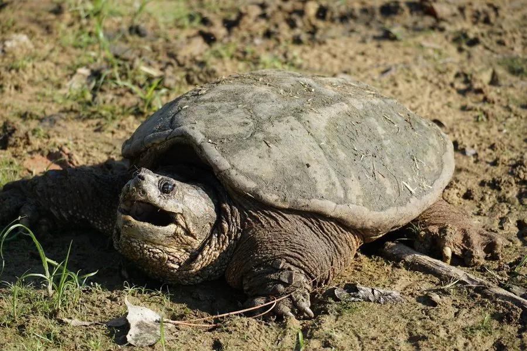

爬行动物 · 动物界
北美拟鳄龟 Chelydra serpentina

原产北美的凶猛水龟，头部粗大、咬合力强，背甲呈锯齿状，被引入中国后成为需要防范的外来物种。
- 分类
- 门脊索动物门纲爬行纲目龟鳖目科鳄龟科属拟鳄龟属
- 栖息环境
- 河流、湖泊、沼泽、池塘等泥底静水或缓流水体
- 地理分布
- 原产北美东部；中国多地养殖并已有野外发现记录
- 保护级别
- IUCN 无危（LC）；中国外来入侵物种，无保护级别
物种志
北美拟鳄龟背甲长 20–40 厘米，最大可达 47 厘米，体重 4–16 千克。它头部粗大，吻端尖，颈部有明显的肉突，背甲呈棕褐或灰褐色，后缘呈锯齿状，中央有三条纵棱；四肢粗壮，爪锐利，尾部较长且上方有锯齿状突起，外形酷似鳄鱼。
它原产于北美东部的河流、湖泊、沼泽与池塘，性格凶猛，食性很杂，捕食鱼、蛙、蛇、水鸟、小型哺乳动物，也吃腐肉，咬合力很强。每年 4–7 月繁殖，雌龟在沙土中产卵 20–50 枚，孵化期 60–90 天，巢温决定性别。它因肉用和宠物贸易被引入中国，逃逸个体在野外建立种群，会捕食本土水生动物，已被列为外来入侵物种；饲养者不可随意放生。
形态与习性
- 食性鱼、蛙、蛇、水鸟、小型哺乳动物及腐肉
- 体长背甲长 20–40 cm，最大可达 47 cm
- 体重约 4–16 kg
- 寿命约 30–50 年
- 繁殖卵生，每窝 20–50 枚，孵化 60–90 天
- 活动节律夜行性，白天多潜伏水底
- 防御咬合力强，受惊时张口威吓，需避免徒手接触
趣味知识
- 北美拟鳄龟的尾部上方有锯齿状突起，加上粗大的头部，外形酷似鳄鱼。
- 它性情凶猛、咬合力强，被抓住时可能咬人，处理时需格外小心。
- 作为外来物种，放生拟鳄龟会捕食本土鱼蛙，破坏当地水生生态。